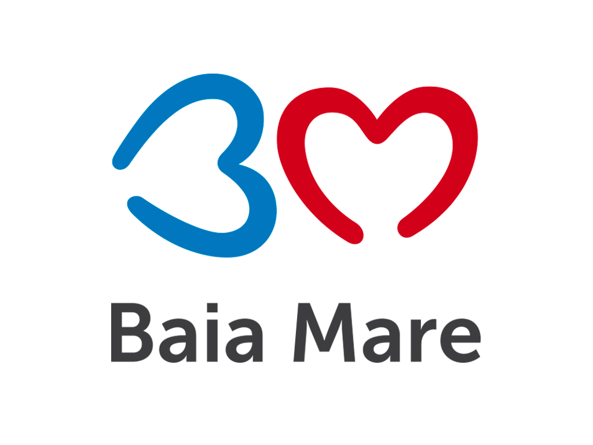

Consiliul Județean Maramureș
Municipiul Baia Mare
Instituţia Prefectului Judeţului Maramureş
Biblioteca Judeţeană „Petre Dulfu” din Baia Mare
Muzeul de Etnografie și Artă Populară din Baia Mare
Muzeul Maramureşului din Sighetul Marmaţiei
Direcția Județeană Pentru Cultură, Culte, Patrimoniul Cultural Național
Cenaclul Scriitorilor din Maramureş
Liceul de Arte din Baia Mare
Şcoala Populară de Artă „Liviu Borlan” din Baia Mare
Palatul Copiilor din Baia Mare – „Dănţăuşii” şi „Mugurii dănţăuşi”
Şcoala Populară de Artă „Gheorghe Chivu” din Sighetul Marmaţiei
Ansamblul „Tileguţa” din Petrova, Ţara Maramureşului
Planetariul din Baia Mare
Atelierul marelui sculptor băimărean Gheza Vida
Muzeul de Artă
Muzeul de Mineralogie
Muzeul de Istorie şi Arheologie
Turnul lui Ştefan
Asociația „Unitate în diversitatea tradițiilor maramureșene”